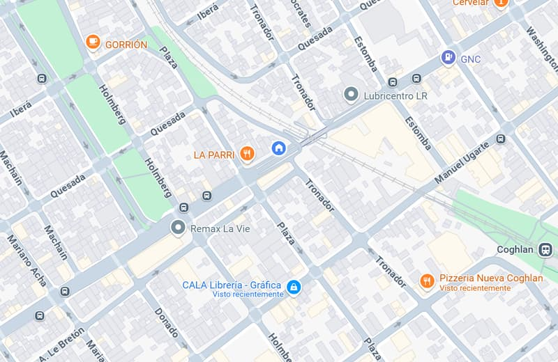

Análisis de Datos · Control de Gestión
Ignacio Lo Sasso
Contador Público (UBA) que convierte datos en decisiones claras.

Sobre Mí
Como Contador Público de la UBA, mi trayectoria en Control de Gestión y Presupuesto me permitió entender la importancia crítica de los datos para la toma de decisiones. Esta base analítica es el motor de mi transición hacia la ciencia de datos.
Mi enfoque actual combina el rigor contable con herramientas tecnológicas para transformar grandes volúmenes de información en insights accionables. Me especializo en procesar datos y crear visualizaciones estratégicas que facilitan la optimización de procesos de negocio.
Especialidades Técnicas
Análisis & Visualización
Programación
Habilidades Profesionales
Intereses
Fútbol
Cine
Guitarra
Viajar
Proyectos Destacados
Trayectoria Profesional
Control de Gestión y Presupuesto Sr.
Gestión presupuestaria integral, control de procesos en SAP y generación de reportes estratégicos para el soporte a la toma de decisiones.
Contabilidad & Finanzas
Gestión contable integral, auditoría y reporte de estados financieros bajo estándares de alta precisión.
Data Analyst (Door Training)
Proyecto Shell 2025
Procesamiento y visualización de datos críticos para la toma de decisiones estratégicas en operaciones de gran escala.
Hablemos
¿Te interesa mi perfil? Estoy listo para aportar.
nacholosasso@hotmail.com
11-3766-4729
Villa Urquiza, CABA
